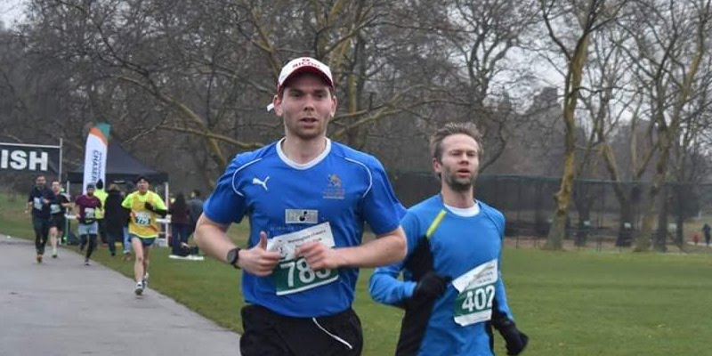
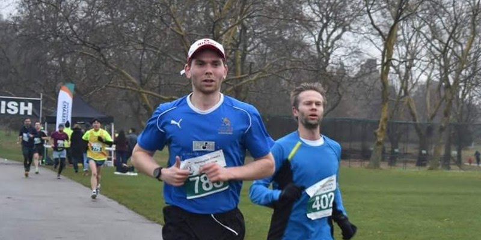
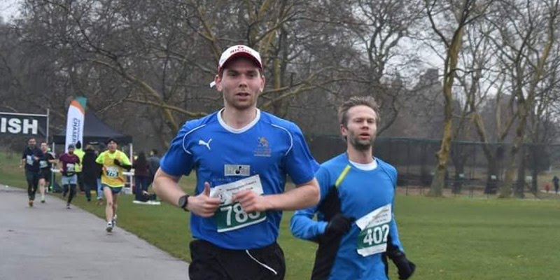

Hi, welcome to my blog!
I studies Maths an University and then went on to do a masters in Economics.
I’m now 26 and have been working for a couple of years as a data scientist in the city of London.
I love hiking, running, rowing and generally being outdoors.

For more on my experience and academic background, download my CV.
About my blog
I started this blog as a project during the Covid pandemic, and really enjoyed the process of building and styling a website.
This is my first (very) tentative step into any form of website development,
so I hope this will only start to look better the more I learn about the underlying technologies.
I think there are loads of good reason to write a blog, improving communication, motivating yourself to learn new things and ‘giving back’ to the community, to name a few.
I think of this this website as somewhere between a blog and a personal notepad. I also maintain a gitbook which i use as a digital garden, a place on the internet where I can leave my mark and others can come to explore my thoughts and ideas.
I’ll be using this blog to write up about data science ideas that I feel are worth sharing.
Right now my main interests are in ML, text analysis, data-vis and R, so I’ll be focusing on
these 4 things for now, that will likely change with time, so stay tuned…

 
